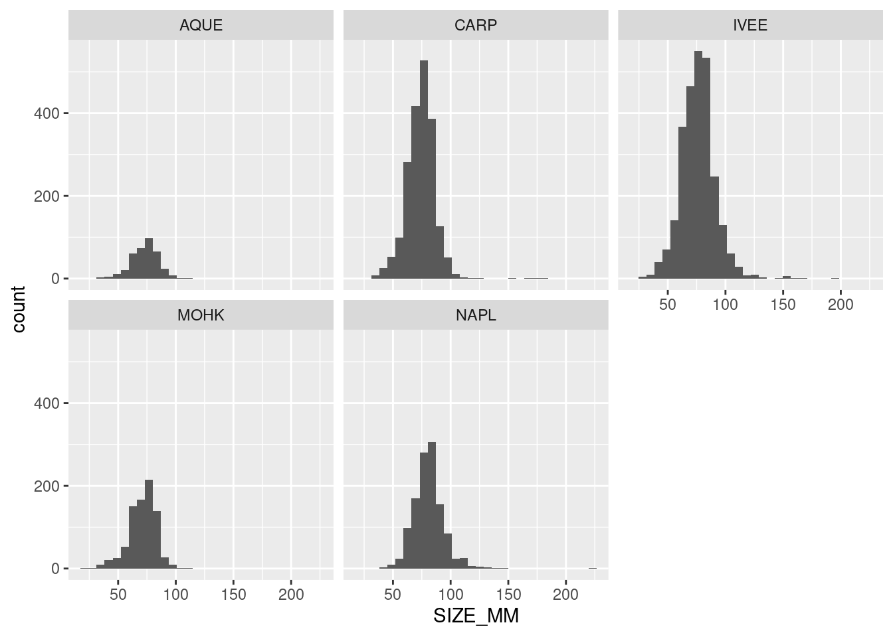

Lobster Report
Loster Abundance and Trap Report
Introduction
We used the lobster data set from EDI Data Portal titled SBC LTER: Reef: Abundance, size and fishing effort for California Spiny Lobster (Panulirus interruptus), ongoing since 2012(LTER, Reed, and Miller 2022)
Abstract
Data on abundance, size and fishing pressure of California spiny lobster (Panulirus interruptus) are collected along the mainland coast of the Santa Barbara Channel. Spiny lobsters are an important predator in giant kelp forests off southern California. Two SBC LTER study reefs are located in or near the California Fish and Game Network of Marine Protected Areas (MPA), Naples and Isla Vista, both established as MPAs on 2012-01-01. MPAs provide a unique opportunity to investigate the effects of fishing on kelp forest community dynamics. Sampling began in 2012 and is ongoing.
This dataset contains two tables. 1) Abundance and size data collected annually by divers in late summer before the start of the fishing season at five SBC LTER long term kelp forest study sites: two within MPAs (Naples and Isla Vista) and three outside (Arroyo Quemado, Mohawk and Carpinteria). 2) Fishing pressure, as determined by counting the number of commercial trap floats. Data are collected every two to four weeks during the lobster fishing season (October to March) at nine sites along the mainland, eight of which are also SBC LTER long-term kelp forest study reefs.
Analysis
The data below shows a multi-panel plot of lobster carapace length by sites.
